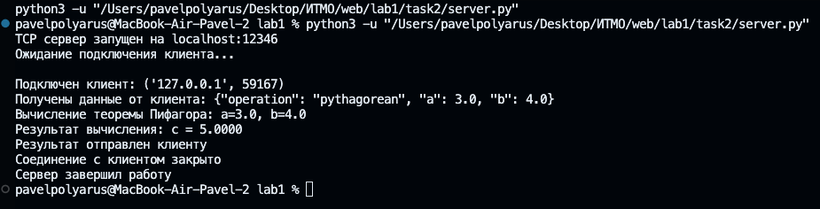
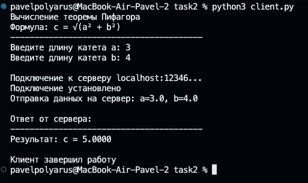
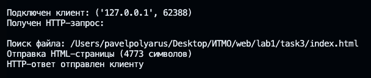
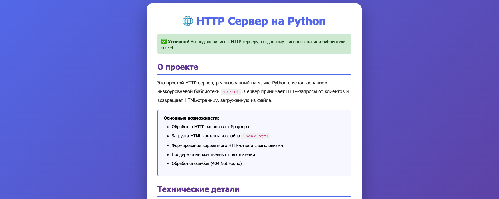
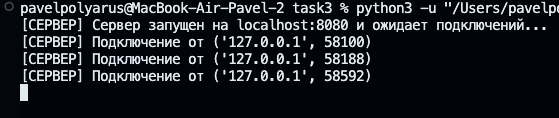
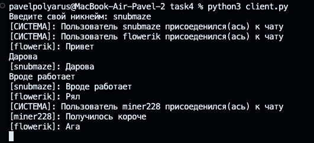
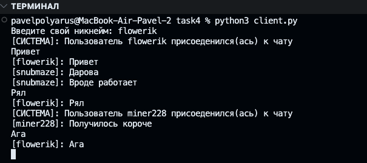
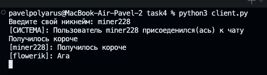
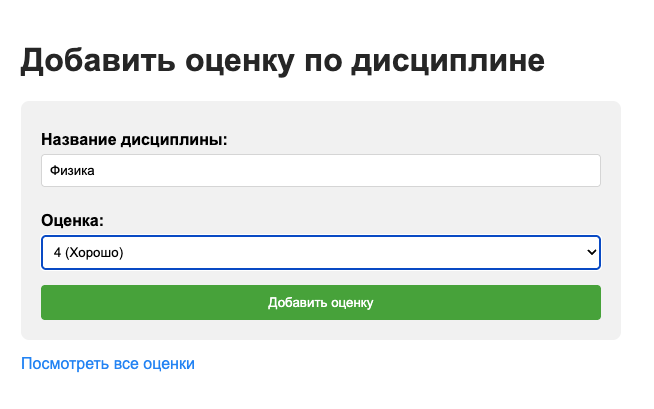
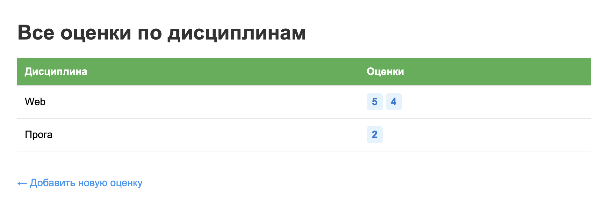

Лабораторная работа 1. Работа с сокетами
Задание 1
Цель: Реализовать клиентскую и серверную часть приложения с использованием протокола UDP. Клиент отправляет серверу сообщение «Hello, server», сервер отображает его и отправляет в ответ «Hello, client».
Описание решения
Для выполнения задания были созданы два файла:
- server.py — серверная часть приложения
- client.py — клиентская часть приложения
Реализация сервера
Серверная часть выполняет следующие функции:
- Создает UDP сокет с использованием
socket.SOCK_DGRAM - Привязывается к адресу
localhostи порту12345 - Ожидает входящее сообщение от клиента методом
recvfrom() - Выводит полученное сообщение в консоль
- Отправляет ответное сообщение "Hello, client" клиенту
- Закрывает соединение
Реализация клиента
Клиентская часть выполняет следующие функции:
- Создает UDP сокет
- Отправляет сообщение "Hello, server" на адрес сервера методом
sendto() - Ожидает ответ от сервера методом
recvfrom() - Выводит полученное сообщение в консоль
- Закрывает соединение
Запуск приложения
Для проверки работы приложения необходимо:
-
Запустить сервер:
-
В отдельном терминале запустить клиент:
Результаты выполнения
Вывод сервера:

Вывод клиента:

Выводы
В ходе выполнения задания была реализована базовая модель клиент-серверного взаимодействия с использованием протокола UDP. Основные отличия UDP от TCP:
- UDP не требует установки соединения
- Отсутствует гарантия доставки пакетов
- Меньшие накладные расходы по сравнению с TCP
- Подходит для приложений, где скорость важнее надежности
Задание 2
Цель: Реализовать клиентскую и серверную часть приложения с использованием протокола TCP. Клиент запрашивает выполнение математической операции (теорема Пифагора), параметры вводятся с клавиатуры, сервер обрабатывает данные и возвращает результат.
Описание решения
Для выполнения задания были созданы два файла:
- server.py — серверная часть приложения
- client.py — клиентская часть приложения
Реализация сервера
Серверная часть выполняет следующие функции:
- Создает TCP сокет с использованием
socket.SOCK_STREAM - Привязывается к адресу
localhostи порту12346 - Переходит в режим прослушивания методом
listen(1) - Принимает входящее соединение от клиента методом
accept() - Получает данные в формате JSON с параметрами
aиb - Вычисляет гипотенузу по формуле:
c = √(a² + b²) - Отправляет результат клиенту в формате JSON
- Закрывает соединение
Ключевые особенности TCP:
- Требуется установка соединения (connection-oriented)
- Гарантия доставки данных
- Использование методов listen() и accept()
- Надежная передача данных
Формат данных: Для обмена структурированными данными используется формат JSON:
// Запрос от клиента
{
"operation": "pythagorean",
"a": 3.0,
"b": 4.0
}
// Ответ от сервера
{
"status": "success",
"result": 5.0,
}
Реализация клиента
Клиентская часть выполняет следующие функции:
- Создает TCP сокет
- Запрашивает у пользователя значения катетов
aиb - Выполняет валидацию введенных данных
- Устанавливает соединение с сервером методом
connect() - Отправляет запрос в формате JSON методом
sendall() - Получает результат от сервера методом
recv() - Выводит результат вычисления на экран
- Закрывает соединение
Обработка ошибок: - Валидация числовых значений - Проверка на положительные значения катетов - Обработка ошибок подключения к серверу - Обработка исключений при работе с сокетами
Пример работы
Входные данные: - Катет a = 3 - Катет b = 4
Ожидаемый результат: - Гипотенуза c = 5
Результаты выполнения
Вывод сервера:

Вывод клиента:

Выводы
В ходе выполнения задания была реализована клиент-серверная модель с использованием протокола TCP для выполнения математических вычислений по теореме Пифагора.
Основные отличия TCP от UDP (из задания 1):
| Характеристика | TCP | UDP |
|---|---|---|
| Установка соединения | Требуется (connect, accept) |
Не требуется |
| Гарантия доставки | Есть | Нет |
| Порядок пакетов | Сохраняется | Не гарантируется |
| Скорость | Медленнее | Быстрее |
| Надежность | Высокая | Низкая |
| Применение | Передача файлов, HTTP | Потоковое видео, DNS |
Преимущества выбора TCP для данной задачи: - Гарантированная доставка математических данных - Сохранение порядка передачи запроса и ответа - Надежность при передаче вычислений - Подходит для приложений, где точность важнее скорости
Задание 3
Цель: Реализовать серверную часть приложения, которая отвечает на HTTP-запросы клиентов, возвращая HTML-страницу, загруженную из файла index.html.
Описание решения
Для выполнения задания были созданы два файла:
- server.py — HTTP-сервер на базе библиотеки socket
- index.html — HTML-страница для отображения в браузере
Реализация сервера
Серверная часть выполняет следующие функции:
- Создание и настройка сокета:
- Создает TCP сокет (
SOCK_STREAM) - Устанавливает опцию
SO_REUSEADDRдля повторного использования адреса -
Привязывается к адресу
localhost:8080 -
Обработка подключений:
- Слушает входящие соединения методом
listen(5) - Принимает подключения от клиентов (браузеров)
-
Читает HTTP-запрос от клиента
-
Загрузка HTML-контента:
- Проверяет существование файла
index.html - Читает содержимое файла в кодировке UTF-8
-
При отсутствии файла формирует страницу ошибки 404
-
Формирование HTTP-ответа:
- Создает статус-линию
HTTP/1.1 200 OK - Добавляет необходимые заголовки:
Content-Type: text/html; charset=utf-8Content-Lengthс размером контентаConnection: close
-
Присоединяет HTML-контент в качестве тела ответа
-
Отправка ответа и закрытие соединения:
- Отправляет HTTP-ответ клиенту методом
sendall() - Закрывает соединение с текущим клиентом
- Продолжает ожидать новые подключения
Особенности реализации
Многопользовательский режим: Сервер работает в бесконечном цикле и может обрабатывать множественные последовательные подключения. После обработки каждого запроса соединение закрывается, но сервер продолжает принимать новые подключения.
Обработка ошибок:
- Проверка существования файла index.html
- Возврат страницы с ошибкой 404 при отсутствии файла
- Обработка исключений при работе с сокетами
- Корректное завершение работы при нажатии Ctrl+C
Опция SO_REUSEADDR: Позволяет немедленно перезапустить сервер после его остановки, избегая ошибки "Address already in use".
Реализация HTML-страницы
Файл index.html содержит:
- Структурированную HTML5-разметку
- Встроенные CSS-стили для оформления
- Информацию о проекте и HTTP-протоколе
- Адаптивный дизайн с градиентным фоном
- Описание работы сервера и технических деталей
Результаты выполнения
Вывод сервера в консоли:

Отображение страницы в браузере:

Выводы
В ходе выполнения задания был реализован простой HTTP-сервер с использованием низкоуровневой библиотеки socket. Основные достижения:
- Понимание HTTP-протокола:
- Структура HTTP-запросов и ответов
- Роль заголовков в передаче метаданных
-
Статус-коды и их значение
-
Работа с файловой системой:
- Чтение HTML-файлов с диска
- Обработка ошибок при отсутствии файлов
-
Корректная работа с кодировкой UTF-8
-
Многопользовательская обработка:
- Последовательная обработка множественных подключений
- Корректное закрытие соединений
-
Возможность работы в бесконечном цикле
-
Практическое применение:
- Сервер может отдавать реальные HTML-страницы
- Работает с любыми совре
Задание 4
Цель: Реализовать многопользовательский чат с использованием протокола TCP и библиотеки threading.
Описание решения
Для выполнения задания были созданы два файла:
- server.py — серверная часть многопользовательского чата
- client.py — клиентская часть для подключения к чату
Принцип работы:
1. Сервер создает основной сокет и ожидает подключений на localhost:8080
2. При подключении нового клиента создается отдельный поток для его обработки
3. Каждый клиент работает в своем потоке независимо от других
4. Сообщения от любого клиента рассылаются всем участникам чата (broadcast)
5. Клиент имеет два потока: один для приема сообщений от сервера, другой для отправки собственных сообщений
Реализация сервера
Основные компоненты:
1. Хранение данных о клиентах:
clients = {} # Словарь {сокет: никнейм} для хранения подключенных клиентов
lock = threading.Lock() # Блокировка для безопасного доступа из разных потоков
2. Функция broadcast(msg): - Принимает сообщение в виде байтов - Проходит по всем активным клиентам в словаре - Отправляет сообщение каждому клиенту через его сокет - При ошибке отправки игнорирует недоступных клиентов (обработка происходит в другом месте)
3. Функция handle_client(client):
- Выполняется в отдельном потоке для каждого клиента
- В бесконечном цикле принимает сообщения от клиента через client.recv(1024)
- Полученные сообщения немедленно рассылает всем участникам через broadcast()
- При получении пустого сообщения или ошибке вызывает remove_client()
- Завершает работу потока при отключении клиента
4. Функция remove_client(client): - Безопасно удаляет клиента из словаря с использованием блокировки - Получает никнейм отключившегося клиента - Рассылает системное уведомление всем оставшимся участникам - Закрывает сокет клиента
5. Функция main():
- Создает серверный TCP-сокет
- Привязывает его к адресу localhost:8080
- Переводит в режим прослушивания
- В бесконечном цикле принимает новые подключения
- Для каждого нового клиента:
- Запрашивает никнейм (отправляет команду NICKNAME)
- Получает никнейм от клиента
- Добавляет клиента в словарь clients
- Рассылает системное сообщение о присоединении
- Запускает новый поток с функцией handle_client()
Реализация клиента
Основные компоненты:
1. Инициализация:
nickname = input("Введите свой никнейм: ") # Запрос никнейма при запуске
client_socket = socket.socket(socket.AF_INET, socket.SOCK_STREAM)
client_socket.connect(("localhost", 8080)) # Подключение к серверу
2. Функция receive():
- В бесконечном цикле принимает сообщения от сервера через client_socket.recv(1024)
- Декодирует полученные байты в строку
- Если получена команда NICKNAME, отправляет свой никнейм серверу
- Все остальные сообщения выводит в консоль
- При ошибке связи выводит уведомление и закрывает сокет
3. Функция write():
- Выполняется в отдельном потоке параллельно с receive()
- В бесконечном цикле читает ввод пользователя через input()
- Формирует сообщение в формате [никнейм]: текст
- Кодирует строку в байты и отправляет на сервер
Результат
Реализован полнофункциональный многопользовательский чат, который: - Поддерживает неограниченное количество одновременных подключений - Обеспечивает мгновенную доставку сообщений всем участникам - Корректно обрабатывает подключения и отключения пользователей - Использует эффективную многопоточную архитектуру - Гарантирует потокобезопасность операций с общими данными
Вывод сервера в консоли:

Вывод клиентов в консоли:



Задание 5
Цель: Написать простой веб-сервер для обработки GET и POST HTTP-запросов с помощью библиотеки socket в Python. Сервер должен принимать и записывать информацию о дисциплине и оценке по дисциплине, а также отдавать информацию обо всех оценках по дисциплинам в виде HTML-страницы.
Описание решения
Для выполнения задания был создан файл:
- simple_server.py — HTTP-сервер с поддержкой GET и POST запросов
Сервер реализован с использованием объектно-ориентированного подхода на основе класса MyHTTPServer и предоставляет следующие маршруты:
- GET /grades/add → форма для добавления оценки
- POST /grades → обработка и сохранение оценки
- GET /grades → отображение всех сохраненных оценок
Принцип работы:
1. Сервер создает TCP-сокет и прослушивает порт 8080
2. При получении запроса парсит Request Line, HTTP-заголовки и тело запроса
3. В зависимости от метода (GET/POST) и пути выполняет соответствующее действие
4. Хранит оценки в памяти в виде словаря {дисциплина: список[оценка]}
5. Формирует и отправляет HTML-ответ клиенту
Архитектура решения
Класс Request: Dataclass для хранения параметров HTTP-запроса (метод, URL, версия протокола, заголовки, тело). Предоставляет удобные свойства для доступа к разобранному URL и параметрам запроса.
Класс MyHTTPServer: Основной класс сервера, который управляет всем жизненным циклом обработки HTTP-запросов.
Ключевые методы:
-
serve_forever()— запускает сервер в бесконечном цикле, принимает подключения клиентов и передает их на обработку. -
parse_request(conn)— разбирает входящий HTTP-запрос: - Читает стартовую строку (метод, URL, версию)
- Парсит заголовки
- Для POST-запросов читает тело размером из заголовка
Content-Length -
Возвращает объект
Requestсо всеми данными -
handle_request(req)— маршрутизатор, определяющий какое действие выполнить: /grades/addс методом GET → показывает форму/gradesс методом POST → сохраняет оценку/gradesс методом GET → показывает таблицу оценок-
Остальное → возвращает 404
-
send_response(conn, resp)— формирует и отправляет HTTP-ответ клиенту с правильными заголовками и телом.
Маршруты сервера
| Метод | Путь | Описание |
|---|---|---|
| GET | /grades/add |
Форма для добавления оценки |
| POST | /grades |
Сохранение новой оценки |
| GET | /grades |
Просмотр всех оценок |
HTML-страницы
Форма добавления оценки: - Текстовое поле для ввода названия дисциплины - Выпадающий список для выбора оценки (2, 3, 4, 5) - Кнопка отправки формы - Ссылка на страницу просмотра всех оценок
Страница со всеми оценками: - HTML-таблица с колонками "Дисциплина" и "Оценка" - Динамическое формирование строк на основе данных из словаря - Сообщение "Оценок пока нет", если словарь пустой - Ссылка для возврата к форме добавления
Страница подтверждения: - Отображается после успешного добавления оценки - Показывает добавленную дисциплину и оценку - Кнопки для добавления еще одной оценки или просмотра всех
Результаты выполнения
Форма добавления оценки:

Страница со всеми оценками:

Выводы
В ходе выполнения задания был реализован HTTP-сервер с полноценной обработкой GET и POST запросов на низком уровне с использованием библиотеки socket.